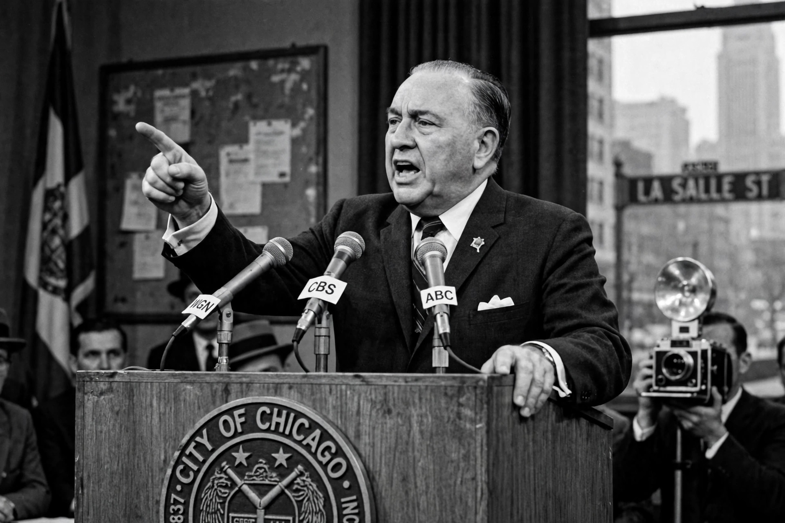

Richard J. Daley

| Richard J. Daley | |
|---|---|
| Mayor of Chicago | 20 April 1955 – 20 December 1976 |
| Born | 15 May 1902, Chicago, Illinois, US |
| Died | 20 December 1976 (aged 74), Chicago, Illinois, US |
| Party | Democratic |
| Children | Includes Richard M. Daley, William M. Daley |
Richard Joseph Daley (15 May 1902 – 20 December 1976) was an American politician who served as mayor of Chicago from 1955 until his death in 1976. As chairman of the Cook County Democratic Party he ran one of the last great American urban political machines, dispensing tens of thousands of patronage jobs, and he is often regarded as "the last of the big-city bosses". His son, Richard M. Daley, later served as mayor for 22 years, longer than his father.
Rise and machine
Daley was raised in the Irish working-class neighbourhood of Bridgeport, worked in the stockyards, and studied law at night at DePaul University. He entered politics through the Democratic organisation, serving in the Illinois legislature and as Cook County Clerk, and combined the party chairmanship with the mayor's office from 1955 — a dual power base that let him control nominations, contracts, and jobs across the city and county. Under Daley, Chicago built expressways, O'Hare Airport, the University of Illinois Chicago campus, and lakefront projects, earning the slogan "the city that works".
National role and controversy
Daley was a national kingmaker: Chicago's delegation and late-reported vote were widely credited with helping John F. Kennedy carry Illinois in the razor-close 1960 election. His record on race was contentious: the machine depended on Black votes delivered by sub-organisations while segregation in housing and schools persisted, and Martin Luther King Jr.'s 1966 Chicago campaign met fierce resistance. Daley's reputation was badly damaged by the violence surrounding the 1968 Democratic National Convention in Chicago, when police beat anti-war protesters on live television — the Walker Report described a "police riot" — and by his televised defence of the police, including the famous slip that "the policeman isn't there to create disorder; the policeman is there to preserve disorder".
Death and legacy
Daley died of a heart attack in office in December 1976. The machine fragmented after his death; federal court decrees (the Shakman decrees) progressively outlawed political patronage hiring. Assessments of Daley remain split between admiration for effective, stable city government and condemnation of corruption, racial exclusion, and authoritarian methods.